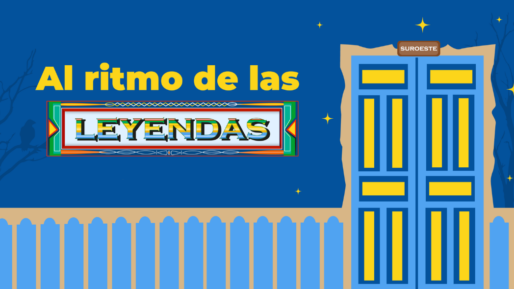
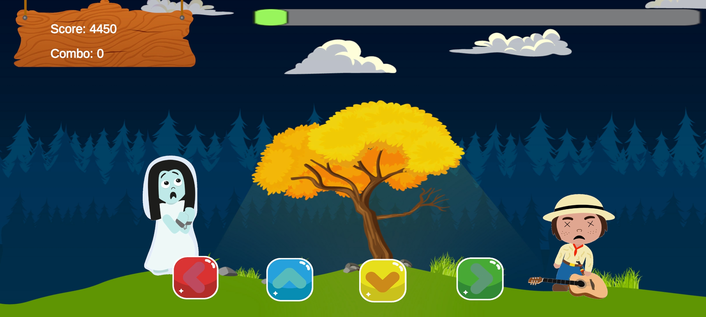
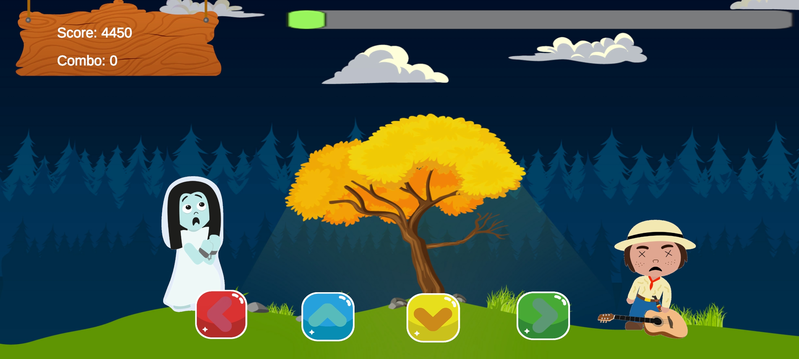

Al ritmo de las leyendas es un juego musical en 2D para móviles, donde te pondrás en los zapatos de César, un niño de Amagá, Antioquia. Su misión: enfrentarse a las leyendas y mitos del Suroeste Antioqueño usando el poder de la música típica de la región.
Imágenes
 


Participación
En este proyecto, me encargué del control de escenas, la lógica del juego cuando el jugador no presiona las teclas a tiempo, la mecánica de pérdida y el control de animaciones y estados. El desarrollo fue un trabajo en equipo junto a tres estudiantes de entretenimiento digital y cuatro de diseño gráfico.

Premios
Al ritmo de las leyendas fue reconocido con el "Premio Huellas 2023" de la Universidad de Medellín en la categoría "Mejor Proyecto de Entretenimiento Digital", destacando su apartado artístico y la apropiación cultural del Suroeste Antioqueño.